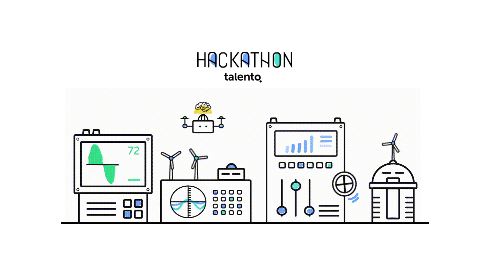

Hackathon Talento - Reto 1 - SUNLAB
Introducción
Este notebook nace de nuestra participación el 4 de junio de 2019 como equipo en el Hackathon de Machine Learning organizado por Talento Corporativo y patrocinado por EDP y BIGml.

La competición consistió en el planteamiento de un par de retos de Machine Learning basados en datos de EDP y en los que había que utilizar la herramienta BIGml para ejecutar los modelos.
El contenido de este notebook corresponde a la realización del primer reto, aunque no corresponde exactamente a lo realizado durante el hackathon. Hemos ampliado el análisis para que se aproxime un poco más a lo que nos hubiese gustado desarrollar durante la competición pero que debido al escaso tiempo disponible y a dificultades con el formato de los datos no nos fue posible desarrollar.
Pese a todo tuvimos la suerte de poder pasar a la final y finalmente ganar la competición.
Para cualquier consulta o sugerencia nos puedes contactar vía Linkedin:
- Linkedin - Sergio Berdiales.
- Linkedin - Javier Campos.
- Linkedin - Manuel Antonio García.
Un artículo en el periódico “El Comercio” haciéndose eco del resultado de la competición: “Calcular vatios tiene premio en el Hackathon”.